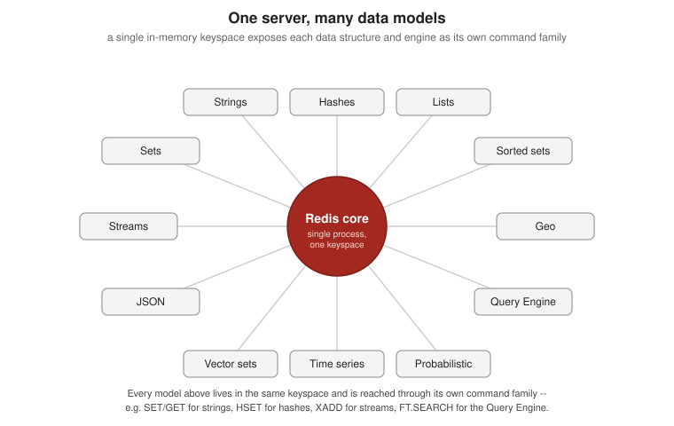

Getting Started
|
This content was generated with the assistance of AI and should be verified against the official documentation before being relied on in production. |
Examples on this page target Redis Open Source 8.10 (specifically 8.10.2), the Java client Jedis 8, and the
Java client Lettuce 7.7. This page covers what Redis is (and is not), its editions and licensing, how to
install and run it, the official tooling, and a first hands-on session from redis-cli, Jedis, and Lettuce.
What Redis is
Redis is an in-memory data-structure server: it keeps its dataset in RAM for very low latency reads and writes, and exposes that dataset through typed commands rather than SQL. A single server binary, built around one core, now also serves as a cache, a message broker (Pub/Sub and Streams), a document store (JSON), a full-text and vector search engine (the Query Engine), and a time-series and probabilistic-data-structure store. Each of those data types and engines is covered in depth on the pages that follow this one; the figure below shows all of them exposed as command families around the same core.

Redis is deliberately not everything, though. It is not a general-purpose relational database: there is no SQL, no ad-hoc joins across arbitrary tables, and no query planner — access patterns are designed around the key you look up, not a schema you query freely. It is not durable by default either: an out-of-the-box instance keeps everything in memory and can lose unsaved writes on a crash; durability (RDB snapshots, AOF, or both) and replication are opt-in configuration, not defaults, and are covered on the architecture page. Treat it first as a fast, in-memory system of record for the data patterns it is good at, not a drop-in replacement for a durable relational or document store.
Editions and licensing
Redis ships in four forms:
| Edition | What it is |
|---|---|
Redis Open Source |
The free, source-available server covered by this section: a single process you run yourself, with every core data type, the Query Engine, JSON, time series, and probabilistic types built in as of 8.0. |
Redis Software |
A self-managed, licensed distribution for running Redis at scale on your own infrastructure or Kubernetes, with clustering, high availability, and an admin console layered on top of the open-source engine. |
Redis Cloud |
Redis’s fully managed cloud service: a database is provisioned through a web console or API, with scaling, backups, and patching operated by Redis. |
Valkey |
A BSD-licensed, Linux Foundation-governed fork of Redis 7.2, created after Redis’s 2024 licence change. It is wire-compatible with Redis Open Source and works with the same clients (Jedis and Lettuce included) without code changes, but it is a separate project with its own release cadence. |
The paid and managed editions — Redis Software, Redis Cloud, and how Valkey compares operationally — are covered in Redis Software, Redis Cloud, Kubernetes & Valkey; this page and the rest of the Redis Reference section focus on Redis Open Source.
Redis 8.0 changed how the server is packaged. Before 8.0, JSON, full-text/vector search, time series, and the
probabilistic data types were separate modules, distributed together as Redis Stack (its own Docker image,
redis/redis-stack, and its own redis-stack.conf). Starting with Redis 8.0, all of that is built into core
Redis: the official redis:8 Docker image includes every one of those capabilities out of the box, ships a
redis-full.conf that documents and enables them, and Redis Stack itself is deprecated — Redis Inc. stopped
publishing maintenance releases for Redis Stack (6.2, 7.2, 7.4) once Redis 8 shipped. New deployments should
pull redis:8, not redis/redis-stack.
Redis’s licence has also changed twice since this repository’s earlier pages were written. Redis was BSD-3-Clause-licensed through 7.2. In March 2024, Redis Community Edition (7.4 through 7.8) moved to a dual licence of the Redis Source Available License v2 (RSALv2) and the Server Side Public License v1 (SSPLv1) — neither is OSI-approved open source, and that change is what prompted the Valkey fork. Redis 8.0 then added the GNU Affero General Public License v3 (AGPLv3) as a third option: you may use Redis 8.0 and later under RSALv2, SSPLv1, or AGPLv3, and AGPLv3 is OSI-approved, so Redis Open Source is meaningfully open source again as of that release.
Installing Redis
The fastest way to run Redis 8 locally is Docker, which needs no host installation at all:
docker run -d --name redis -p 6379:6379 redis:8Native packages are available for every major platform:
-
Debian/Ubuntu (APT) — add the Redis package repository and its signing key, then install:
sudo apt-get install lsb-release curl gpg curl -fsSL https://packages.redis.io/gpg | sudo gpg --dearmor -o /usr/share/keyrings/redis-archive-keyring.gpg sudo chmod 644 /usr/share/keyrings/redis-archive-keyring.gpg echo "deb [signed-by=/usr/share/keyrings/redis-archive-keyring.gpg] https://packages.redis.io/deb $(lsb_release -cs) main" \ | sudo tee /etc/apt/sources.list.d/redis.list sudo apt-get update sudo apt-get install redis -
RHEL/Rocky/AlmaLinux (RPM) — import the signing key and add the
packages.redis.iorepo, then install withyum/dnf:curl -fsSL https://packages.redis.io/gpg > /tmp/redis.key sudo rpm --import /tmp/redis.key sudo yum install redis -
macOS (Homebrew):
brew install redis brew services start redis -
Ubuntu (snap):
sudo apt update sudo apt install redis-tools sudo snap install redis -
Windows — Redis Open Source has no native Windows build; run it in WSL 2 (using any of the Linux methods above inside the WSL distribution) or with Docker Desktop, exactly as shown above.
Building Redis from source is also supported for platforms without a package; see Build and install Redis from source if none of the above fits.
Tools
-
redis-cli— the official command-line client, bundled with every install and covered in full in the session below. Beyond a bare command, it accepts-h/-pfor the target host and port,--user/--passfor ACL-style authentication, and--tlsto connect over TLS;--jsonswitches reply formatting to JSON,--statopens a rolling live view of memory, clients, and request rate, and--bigkeysscans the whole keyspace to report the largest key of each type. -
Redis Insight 3.8 — Redis’s free GUI companion: a data browser, a query/command console, a profiler, and guided workflows for the newer data types (Redis Insight 3.8 added full browsing and editing support for the 8.8 Array type). It connects to any Redis Open Source, Software, Cloud, or Valkey instance.
-
Redis for VS Code — an official extension that adds a Redis data browser and a command console directly inside VS Code, for exploring a database without leaving the editor.
Running Redis for the Bookshop examples
The examples throughout this Redis Reference section use a small Bookshop catalogue: each book is a JSON
document at key bookshop:book:<isbn>, with fields $.isbn, $.title, $.author, $.genres[], $.price,
$.year, $.description, $.stock, and a 384-dimensional $.embedding vector. Sample titles include
The Redis Way (ISBN 9780000000001, fiction), Streams in Practice (ISBN 9780000000002, technology), and
Vectors for Humans (ISBN 9780000000003, technology).
This compose.yaml brings up Redis 8 alongside Redis Insight, both used throughout this section:
services:
redis:
image: redis:8
ports:
- "6379:6379"
volumes:
- redis-data:/data
redisinsight:
image: redis/redisinsight:latest
ports:
- "5540:5540"
depends_on:
- redis
volumes:
- redisinsight-data:/data
volumes:
redis-data:
redisinsight-data:Its docker run/docker compose flags are explained in Running
Containers. With the stack up, Redis Insight is reachable at http://localhost:5540 and can connect to the
redis service on port 6379.
A first redis-cli session
redis-cli connects to localhost:6379 by default; add -h/-p to target a different host or port. This
session stores one Bookshop book as a plain string (the JSON and hash forms used elsewhere in this section
come later), inspects it, and cleans up:
$ redis-cli
127.0.0.1:6379> SET bookshop:cache:book:9780000000001 '{"title":"The Redis Way","price":24.99}' EX 600
OK
127.0.0.1:6379> GET bookshop:cache:book:9780000000001
"{\"title\":\"The Redis Way\",\"price\":24.99}"
127.0.0.1:6379> TTL bookshop:cache:book:9780000000001
(integer) 600
127.0.0.1:6379> TYPE bookshop:cache:book:9780000000001
string
127.0.0.1:6379> SCAN 0 MATCH bookshop:cache:*
1) "0"
2) 1) "bookshop:cache:book:9780000000001"
127.0.0.1:6379> EXPIRE bookshop:cache:book:9780000000001 60
(integer) 1
127.0.0.1:6379> DEL bookshop:cache:book:9780000000001
(integer) 1
127.0.0.1:6379> HELP @string
APPEND key value
summary: Appends a string to the value of a key
since: 2.0.0
group: string
...SET … EX 600 writes the key with a 600-second expiration in one round trip; TTL reads the remaining time,
TYPE confirms the stored encoding, SCAN walks the keyspace without blocking the server the way KEYS
would, EXPIRE re-arms the TTL, and DEL removes the key outright. HELP @string lists every command in the
string command group, with a one-line summary of each — useful for discovering commands from inside the
shell itself. See
redis-cli for the full command reference used in this
session.
Hello world in Jedis and Lettuce
Both clients target the versions stated at the top of this page: Jedis 8 and Lettuce 7.7.
Jedis 8 connects through RedisClient, the entry point that replaced JedisPool/JedisPooled and the older
UnifiedJedis-based setup:
<dependency>
<groupId>redis.clients</groupId>
<artifactId>jedis</artifactId>
<version>8.0.1</version>
</dependency>package com.example.bookshop;
import redis.clients.jedis.RedisClient;
public class BookshopJedisHelloWorld {
public static void main(String[] args) {
try (RedisClient redis = RedisClient.create("redis://localhost:6379")) {
redis.set("bookshop:book:9780000000001:title", "The Redis Way");
String title = redis.get("bookshop:book:9780000000001:title");
System.out.println(title); // The Redis Way
}
}
}See Jedis guide (Java) for the source this example
follows, including the connection-API table explaining why RedisClient replaces the older classes.
Lettuce builds a client explicitly with RedisClient.create(…), then opens a stateful connection and asks
it for a synchronous command view:
<dependency>
<groupId>io.lettuce</groupId>
<artifactId>lettuce-core</artifactId>
<version>7.7.0.RELEASE</version>
</dependency>package com.example.bookshop;
import io.lettuce.core.RedisClient;
import io.lettuce.core.RedisURI;
import io.lettuce.core.api.StatefulRedisConnection;
import io.lettuce.core.api.sync.RedisCommands;
public class BookshopLettuceHelloWorld {
public static void main(String[] args) {
RedisURI uri = RedisURI.Builder.redis("localhost", 6379).build();
RedisClient client = RedisClient.create(uri);
try (StatefulRedisConnection<String, String> connection = client.connect()) {
RedisCommands<String, String> commands = connection.sync();
commands.set("bookshop:book:9780000000001:title", "The Redis Way");
System.out.println(commands.get("bookshop:book:9780000000001:title")); // The Redis Way
} finally {
client.shutdown();
}
}
}See Lettuce guide (Java) for the source this example follows, including the asynchronous and reactive command views built on the same connection.
Related pages
-
Architecture, Keyspace & Eviction — the execution model, keyspace layout, and expiration/eviction behavior behind the commands used above.
-
Redis Software, Redis Cloud, Kubernetes & Valkey — Redis Software, Redis Cloud, running Redis on Kubernetes, and Valkey compared to Redis Open Source in depth.